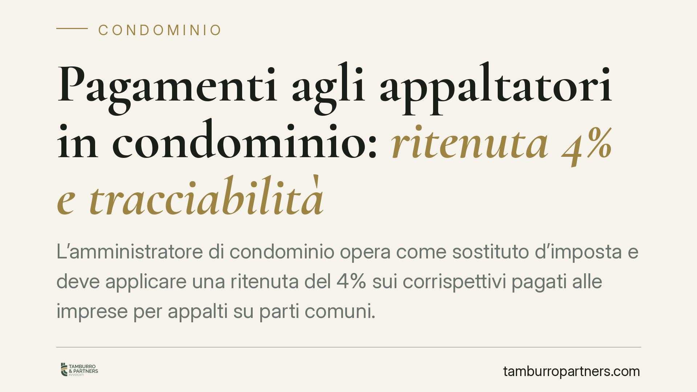

Pagamenti agli appaltatori in condominio: ritenuta 4% e tracciabilità
L'amministratore di condominio opera come sostituto d'imposta e deve applicare una ritenuta del 4% sui corrispettivi pagati alle imprese per appalti su parti comuni. Non è una novità del 2026, ma un obbligo già vigente che genera ancora errori. Vediamo quando si applica davvero, quali pagamenti ne restano fuori e come gestire la tracciabilità per evitare contestazioni.

Il condominio come sostituto d'imposta
Quando il condominio commissiona lavori sulle parti comuni, l'amministratore non è un semplice pagatore: la legge lo qualifica come sostituto d'imposta. Significa che, al momento del pagamento, deve trattenere una quota del corrispettivo e versarla all'Erario per conto dell'impresa.
La fonte è l'art. 25-ter del D.P.R. 29 settembre 1973, n. 600, introdotto per contrastare l'evasione nel settore edilizio condominiale. La norma impone una ritenuta del 4%, a titolo di acconto dell'imposta sul reddito, sui corrispettivi dovuti per prestazioni relative a contratti di appalto di opere o servizi eseguiti nell'esercizio di impresa, riguardanti le parti comuni.
Che cosa si intende per contratto di appalto
Il punto decisivo è capire *quando* scatta davvero la ritenuta. La risposta dipende dalla natura del contratto.
L'art. 1655 del codice civile definisce l'appalto come il contratto con cui una parte assume, con organizzazione dei mezzi necessari e gestione a proprio rischio, il compimento di un'opera o di un servizio verso un corrispettivo. Sono gli elementi che distinguono l'appalto da altre figure:
- la prestazione d'opera (art. 2222 c.c.), in cui il lavoro è prevalentemente personale, senza organizzazione d'impresa;
- la somministrazione (art. 1559 c.c.), che riguarda la fornitura periodica di cose.
La ritenuta del 4% presuppone un appalto *eseguito nell'esercizio di impresa*. Resta quindi fuori chi opera come lavoratore autonomo in forma di prestazione d'opera non imprenditoriale: per i professionisti si applicano regole diverse (ritenuta del 20% ex art. 25 D.P.R. 600/1973), non il 4%.
È un errore frequente estendere la ritenuta del 4% a ogni fornitore. Giardinaggio, pulizie o manutenzione vi rientrano solo se resi da un'impresa nell'ambito di un vero contratto di appalto di servizi sulle parti comuni. La qualificazione va verificata caso per caso, non applicata in automatico.
Tracciabilità: perché conviene, anche senza divieti
Sul fronte dei pagamenti non esiste, allo stato, un divieto generale e specifico di usare contanti negli appalti condominiali diverso dalle regole ordinarie. Resta però pienamente operativa la soglia generale per i trasferimenti di contante, pari a 5.000 euro (art. 49 D.Lgs. 231/2007): sopra tale importo il pagamento in contanti è vietato.
Al di là della soglia, la tracciabilità del pagamento è lo strumento che consente di documentare l'operazione, dimostrare l'avvenuta applicazione della ritenuta e ricostruire i flussi in caso di controllo. Bonifico o altri strumenti tracciabili non sono quindi un obbligo fine a sé stesso, ma una tutela concreta per l'amministratore e per la compagine condominiale.
Implicazioni pratiche per l'amministratore
La responsabilità dell'adempimento grava sull'amministratore. Un errore nell'applicazione o nel versamento della ritenuta può comportare sanzioni tributarie a carico del condominio, con possibile rivalsa.
Gli adempimenti collegati sono tre: trattenere il 4% al pagamento, versarlo entro i termini con modello F24 e certificare le ritenute all'impresa (Certificazione Unica), riportandole poi nella dichiarazione del sostituto d'imposta (modello 770).
Il rischio maggiore nasce dalla qualificazione sbagliata del contratto: applicare la ritenuta dove non serve espone a contestazioni dell'impresa; ometterla dove è dovuta espone a sanzioni erariali.
Cosa fare in concreto
- Qualifica il contratto prima di pagare: verifica se si tratta di appalto d'impresa (art. 1655 c.c.), prestazione d'opera o fornitura di beni. La ritenuta del 4% riguarda solo gli appalti di opere o servizi su parti comuni resi nell'esercizio di impresa.
- Applica e versa la ritenuta del 4% sui corrispettivi dovuti, utilizzando il modello F24 entro i termini di legge, e conserva le quietanze.
- Paga con strumenti tracciabili (bonifico), sempre nel rispetto del limite di 5.000 euro al contante ex art. 49 D.Lgs. 231/2007.
- Rilascia la certificazione delle ritenute all'impresa e cura il modello 770.
- In caso di dubbio sulla natura del rapporto, consigliamo di acquisire un parere prima del pagamento: la correzione a posteriori è più onerosa della verifica preventiva.
---
Contributo informativo a cura di Tamburro & Partners - Avv. Giuseppe Tamburro. Non costituisce parere legale.
Ogni condominio ha una storia a sé.
Se gestisci un'amministrazione e vuoi un confronto su una specifica questione condominiale, scrivi allo studio. Ti rispondiamo entro un giorno lavorativo.